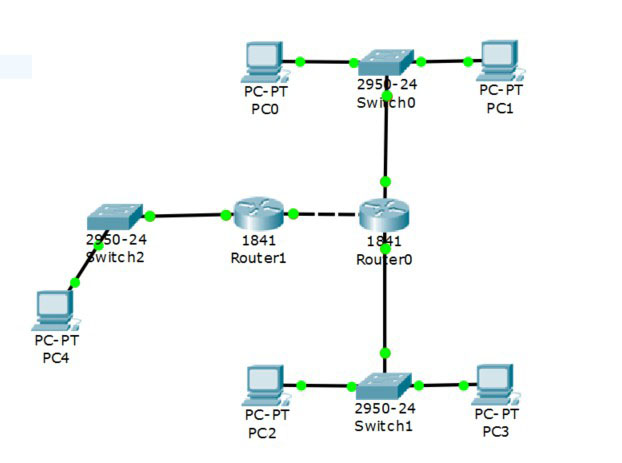
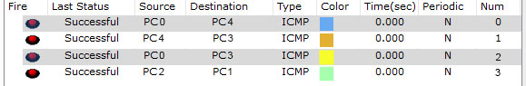

Задачи
Верещагин Владимир Геннадьевич.
Группа: ИДМ-17-01
- Лабораторная работа №1 Экосистема разработки программ с открытым кодом":
Создание персональной страницы-отчета на github и работа с git. - Лабораторная работа №2 "Разработка простого веб-приложения":
Проектирование и разработка индивидуального или коллективного веб-приложения (SPA) с использованием html,css,js + json,xml - Лабораторная работа №3 "Настройка локальной сети передачи данных":
Настройка коммутаторов и маршрутизаторов - Подготовка к экзамену:
Самооценка прохождения теста по инновациям, формулировка одного вопроса по теме "Интернет-технологии" в одной из форм, встречающихся в тесте (выбор одного, выбор многих, упорядочивание, соответствие)
Лабораторная работа #1
Работа с Github
- Задачи:
- Регистрация на GitHub.
- 1. Страница пользователя
- Создать персональную веб страницу-отчет с использованием html, css, js.
- 2. Персональная страница-отчет.
- Загрузить персональную веб страницу-отчет в репозиторий ИДМ-17 по курсу "Интернет-технологии" на GitHub.
- 3. Папка с исходными кодами в репозитории.
Лабораторная работа #2
Разработка простого веб-приложения
-
Задачи:
1. Собрать команду для разработки веб-приложения (SPA) и распределить роли.
Страница команд.
2. Разработать макет страницы веб-приложения.
Макет страницы.
3. Прописать стили страницы
CSS
4. Прописать js функционал и реализовать возможность чтения json.
JS, JSON
Результат:
Работающий прототип
Лабораторная работа #3
Настройка локальной сети передачи данных
-
Настройка коммутаторов и маршрутизаторов.
Вариант 5
Расчет диапазонов подсетей.
| - | Lan A | Lan B | Lan C |
|---|---|---|---|
| Кол-во узлов | 35 | 120 | 512 |
| Subnet | 192.168.5.0 | 172.16.5.0 | 10.10.5.0 |
| Mask | 255.255.255.192 | 255.255.255.128 | 255.255.252.0 |
| Broadcast | 192.168.5.63 | 172.16.5.127 | 10.10.8.255 |

ШАГ 2: Добавить на рабочее поле еще один коммутатор с двумя компьютерами и настроить адресацию из другой подсети

ШАГ 3: Соединить коммутаторы между собой и проверить работоспособность сети (Не работает, так как коммутаторы подсоединяются только к маршрутизаторам)

ШАГ 4: Добавить маршрутизатор на рабочее поле

ШАГ 5: Добавить на рабочее поле еще один маршрутизатор. Подключить к нему коммутатор и компьютер

| Устройство | IP - адрес | Маска | Шлюз |
|---|---|---|---|
| PC0 | 192.168.5.62 | 255.255.255.192 | 192.168.5.1 |
| PC1 | 192.168.5.61 | 255.255.255.192 | 192.168.5.1 |
| PC2 | 172.16.5.126 | 255.255.255.128 | 172.16.5.1 |
| PC3 | 172.16.5.125 | 255.255.255.128 | 172.16.5.1 |
| PC4 | 10.10.8.254 | 255.255.252.0 | 10.10.5.1 |
| R0 0/0 | 192.168.5.1 | 255.255.255.192 | - |
| R0 0/1 | 172.16.5.1 | 255.255.255.128 | - |
| R0 0/2 | 15.15.5.2 | 255.255.255.252 | - |
| R1 0/1 | 10.10.5.1 | 255.255.252.0 | - |
| R1 0/2 | 15.15.5.1 | 255.255.255.252 | - |
Установить банер на сетевое оборудование: banner motd [баннер]
Проверка работоспособности сети:

Подготовка к экзамену
-
Самооценка прохождения теста по инновациям, формулировка одного вопроса по теме "Интернет-технологии" в одной из форм, встречающихся в тесте (выбор одного, выбор многих, упорядочивание, соответствие)
Установите соответствие
| Уровень OSI | Устройство |
|---|---|
| Прикладной | Шлюз |
| Представительский | Шлюз |
| Сеансовый | Коммутатор |
| Транспортный | Маршрутизатор |
| Сетевой | Хаб, повторитель |
| Канальный | Шлюз |
| Физический | Шлюз |
Показать правильный ответ
| Уровень OSI | Устройство |
|---|---|
| Прикладной | Шлюз |
| Представительский | Шлюз |
| Сеансовый | Шлюз |
| Транспортный | Шлюз |
| Сетевой | Маршрутизатор |
| Канальный | Коммутатор |
| Физический | Хаб, повторитель |